Batman Begins
Main Content
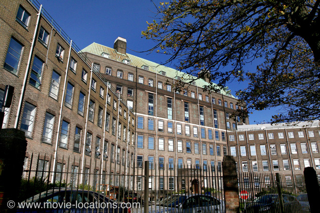
‘Gotham City’ (recreated on sets for the Tim Burton films) is a mix of sinisterly deco locations around Chicago and London, knitted seamlessly together, as well as some pretty impressive sets at Shepperton Studios and in one of the two gigantic airship hangars at Cardington, a couple of miles southeast of Bedford in Bedfordshire (rail: Bedford, from London Euston or King’s Cross). Both subsequent films, The Dark Knight and The Dark Knight Rises, returned to Cardington. The hangars have since been used to house the vast 'New York Docks' set for Fantastic Beasts And Where To Find Them.
Forget Wham!, Pow! and 60s camp. And even Burton’s darkly Gothic Batman starts to look lightweight. Christopher Nolan (Memento) – famously working without a second unit – delivers a grittily realistic reboot of the Caped Crusader myth.
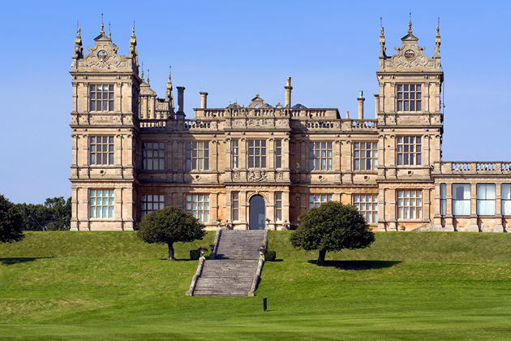
▶ ‘Wayne Manor’, after its previous sojourns in the US, returns to the UK. It’s Mentmore Towers in Mentmore, Buckinghamshire, also seen as the exterior of the ‘Long Island’ orgy mansion in Stanley Kubrick's Eyes Wide Shut, as a restaurant in Terry Gilliam's Brazil and in both The Mummy and The Mummy Returns. The house, just to the north of Cheddington station, on the West Coast Main Line between London Euston and Milton Keynes, is is currently closed after plans to convert it into a hotel fell through.
Mentmore Towers is a Victorian extravagance built in 1854 for the Rothschild banking family, and based on the genuine Tudor mansion of Wollaton Hall, Nottinghamshire, in the English Midlands. Guess where you can see Wollaton itself? As ‘Wayne Manor’ in The Dark Knight Rises. ⏏
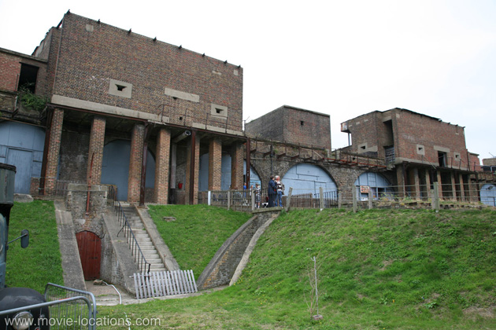
▶ The ‘Bhutanese’ prison, in which Bruce Wayne (Christian Bale) hits rock-bottom before being found by Henri Ducard (Liam Neeson), is Coalhouse Fort, East Tilbury, in Essex. The Victorian fort, built around 1870, was intended to protect London from French invaders. It stands now in a pleasant green park on the north bank of the Thames, protected by its moat. There are occasional open days and events when you can take a look inside. The fort is a couple of miles south of East Tilbury railway station, past the village of East Tilbury itself (rail: East Tilbury, from London Fenchurch Street). ⏏
It’s off to Iceland for the ‘Tibetan Himalayas’ scenes – chosen for the landscape’s volcanic bleakness – where Wayne flees to seek counsel with the mysterious ninja leader Ra’s Al Ghul (Ken Watanabe), which were filmed at Öræfasveit, Vatnajökuls and Svínafellsjökuls. Although an exterior set was built at Cardington, the swordfight between Wayne and Ducard really was filmed on the location’s glacial ice.
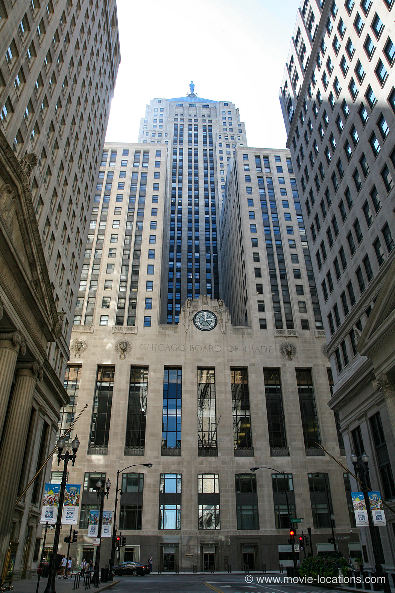
▶ The ‘Wayne Enterprises’ HQ towering over the city is Chicago. It’s the landmark Board of Trade Building, 141 West Jackson Boulevard, at the foot of LaSalle Street. ⏏
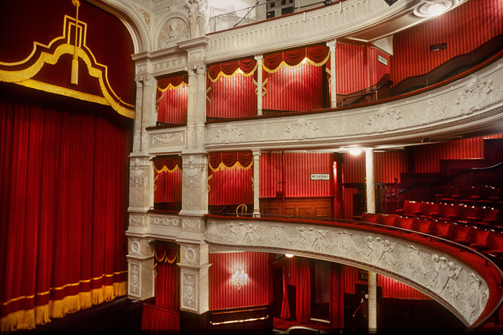
▶ The ‘Gotham’ opera house, in which a young Bruce Wayne is spooked by an unfortunately bat-infested production, is more usually home to light comedy. It’s the Garrick Theatre, Charing Cross Road, WC2, in the heart of London’s West End (Tube: Leicester Square, Northern and Piccadilly Lines). ⏏
The murder of Bruce’s parents by Joe Chill was filmed on the ‘Gotham’ street set at Cardington.

▶ The first floor offices of the The Farmiloe Building, 28-36 St John Street, Clerkenwell, London EC1, were transformed into ‘Gotham City Police Station’, in which Sergeant Gordon (Gary Oldman) works and, with an eye to economy, the film’s ‘Shanghai’ warehouse was filmed in the same building, and both sequels, The Dark Knight and The Dark Knight Rises, return to the location. Christopher Nolan also used the Farmiloe as the pharmacy in Inception. Its all-purpose interior can also be seen in Tinker Tailor Soldier Spy, Mission: Impossible – Rogue Nation and Legend.
You might have seen the Italianate Victorian frontage of the building as the ‘Trans Siberian’ restaurant of ruthless patriarch Semyon (Armin Mueller-Stahl) in David Cronenberg’s Eastern Promises. ⏏
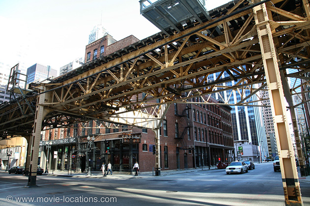
▶ But after visiting Sergeant Gordon, Bruce Wayne’s disappearance into the night was filmed on the rooftops of the buildings on the south side of West Lake Street at the junction with Franklin Street in Chicago. ⏏
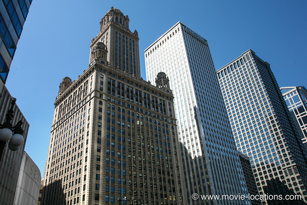
▶ The ‘City of Gotham State Courts’, in which Joe Chill stands trial, is a mixture of locations. The elaborate exterior is Chicago: the Jewelers Building, 35 East Wacker Drive, on the Chicago River. Much later, after delivering up crime boss Falcone (Tom Wilkinson) to the law, Batman surveys the city from atop the skyscraper’s elaborate ornamentation.
Built in 1926 as a centre for the diamond business, one of the tower’s security features was a huge lift which could carry cars up to the 22nd floor before the precious cargo needed to be unloaded (though this was dismantled in the early 40s). It’s dome once housed the Stratosphere Lounge, a speakeasy owned – according to legend – by Al Capone.
It’s atop the Jewelers Building that Sentinel Prime sets up the Pillars to open up a space bridge in Transformers: Dark Of The Moon. ⏏
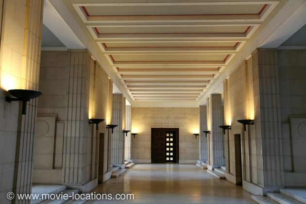
▶ The ‘Gotham courts’ lobby, in which Chill is gunned down by one of Falcone’s lackeys before a vengeful Bruce Wayne can do the job himself, is Senate House, University of London, Malet Street, London WC1, seen as ‘New York’ in Tony Scott's vampire flick The Hunger and as the CIA HQ in the same director’s Spy Game, as as well as the king’s bunker in Richard Loncraine's Richard III, with Ian McKellen, and more recently as ‘the best restaurant in Moscow’ in Kenneth Branagh’s Jack Ryan: Shadow Recruit.
The location is revisited for sequel The Dark Knight. Its brutalist exterior is said to have inspired the look of the ‘Ministry of Truth’ in George Orwell’s Nineteen Eighty-Four, and indeed it is used in Michael Radford’s 1984 film version. It’s not normally open to the public. ⏏
▶ The 'Gotham’ docks, where Bruce Wayne makes his first fully-fledged appearance as Batman, is Tilbury Docks in Essex (which you’ve probably seen in Indiana Jones and the Last Crusade, as the ‘Venice’ waterfront). ⏏
▶ Lucius Fox (Morgan Freeman) demonstrates the Tumbler, later to become the Batmobile (though it’s never referred to as such in the film), in the vast and empty space of the Event Hall at the ExCel Centre, London E16, the Exhibition and Conference Centre in the glossy new Docklands highrise complex. ⏏
▶ Conveniently for the filmmakers, Bruce Wayne, in debauched playboy mode, bumps into Rachel Dawes (Katie Holmes) in Terence Conran's restaurant Plateau, on the fourth floor of Canada Place, Canada Square, in the same complex. As you can see from the film, it’s a designer restaurant with great views over Canary Wharf. ⏏
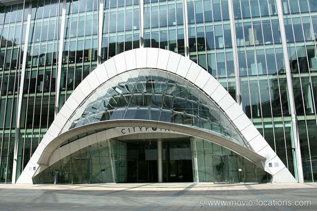
▶ The exterior of the restaurant, by the way, isn’t Docklands at all, but CityPoint, Ropemaker Street, London EC2, near Moorgate. The same striking ‘eyelid’ entrance also stands in for the entrance to 'Innovative Online Industries' in Steven Spielberg's Ready Player One, appears as the quarantined Docklands area in 28 Weeks Later... and is also where Woody Allen and Scarlett Johansson spy on Hugh Jackman in Scoop.
By the way, it's alongside CityPoint, just around the corner on Ropemaker Street, that the Ancient One plummets to earth (supposedly in 'New York') in Doctor Strange. ⏏
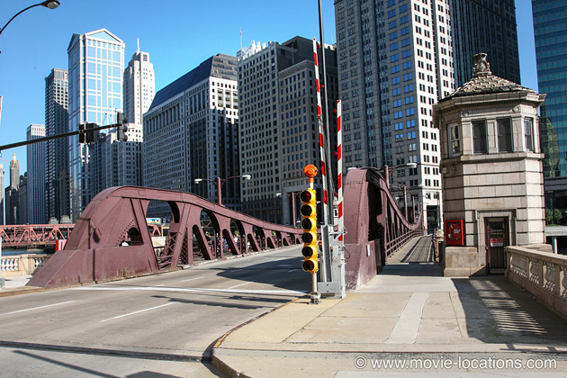
▶ There’s quite a bit of location trickery with Dr Crane’s asylum. ‘The Narrows' is reached by Chicago's Franklin Street Bridge, at the northern end of Franklin Street, linking the Loop to the Near North Side area (CTA: Clark/Lake Station; Blue, Orange, Pink, Green, Brown and Purple Lines). Like London’s Tower Bridge, it’s a bascule bridge in two sections, which can be raised to allow river traffic – or to seal off the Narrows, of course... ⏏
▶ ‘Arkham Asylum’ itself, though, is in London. The exterior was the severe 40s-style National Institute for Medical Research, the Ridgeway at Burtonhole Lane, Mill Hill, NW7, north London. The impressively brooding building was demolished in 2018.⏏
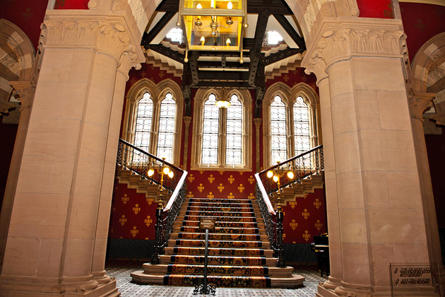
▶ The interior stairwell, where the SWAT team encounters a flock of bats, though, is the elaborate Gothic stairwell of St Pancras Chambers, attached to what is now St Pancras London Hotel, Euston Road, London NW1, originally Sir George Gilbert Scott’s Midland Grand Hotel, a lavish palace of luxury for Victorian travellers.
The last word in comfort when it opened in 1873, the hotel was soon overtaken by changing demands. Ironically, the building’s solid construction proved its downfall. Unable to accommodate such modern improvements as en-suite bathrooms and central heating, the hotel inevitably closed down.
Its ceilings were boarded over, its lavish rooms divided up into offices, and in the Sixties the wildly unfashionable extravaganza came close to being demolished. Grade I listing finally ensured its survival and radical restoration means that it is functioning as a luxury hotel once again, the St Pancras Renaissance Hotel.
In 1989, while it was closed, its Ladies Smoking Room became the office of the ‘Gotham Globe’ in Tim Burton’s Batman.
The old St Pancras Chambers was an asylum, too, in Richard Attenborough's 1992 biopic Chaplin, in which Charlie’s mother (Geraldine Chaplin) is confined after her mental breakdown, and was also seen in the 1976 WWII melodrama Voyage of the Damned, and in Robert Bierman’s 1997 film of George Orwell’s Keep the Aspidistra Flying, with Richard E Grant.
Oh, and you might also recognise the elaborate stairwell from the first Spice Girls videoWannabe, or did you spot it in Ken Russell's 1974 Mahler, with Robert Powell as the composer.. ⏏
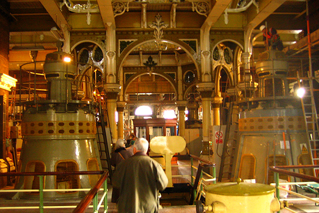
▶ The industrial Gothic interior of the ‘Arkham Asylum’ laboratory, in which Dr Crane, aka The Scarecrow, (Cillian Murphy) manufactures vast quantities of ‘psychotropic hallucinogen’, was filmed in the Abbey Mills Pumping Station, Abbey Lane, E15, in West Ham. It’s a sewage pumping station, but the Victorians were not ones to stint on the decoration. Built in the 1860s as part of engineer Joseph Bazalgette’s new sewerage system, it’s rightly regarded as one of the great – if not most glamorous – wonders of the industrial age.
The London sewers slope gently from west to east, so that the contents flow naturally under gravity, but this means that on reaching the East End, they are deep underground. The function of this strikingly Byzantine facility was simply to pump vast amounts of poo high enough for it to flow downhill away from the city and into the Thames.
The station has since been used for the filming of Gerald McMorrow’s dystopian sci-fi Franklyn, with Eva Green, Sam Riley and Ryan Phillippe. ⏏
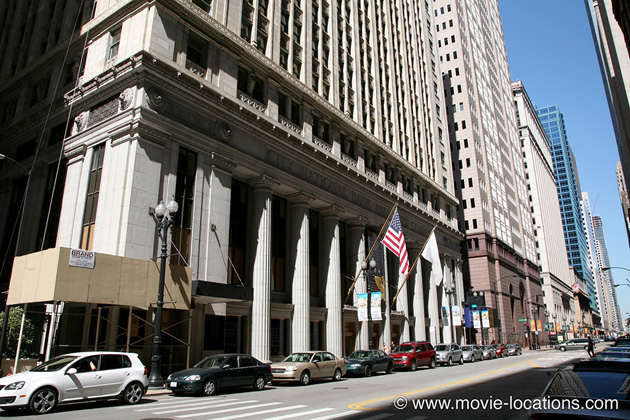
▶ After Rachel receives a nasty sample of The Scarecrow’s panic-inducing toxin, Batman races to get her to the antidote – but by a strangely circuitous route through the Chicago Loop.
From the Franklin Street Bridge, he’s suddenly careering west, about seven blocks to the south, on Jackson Boulevard at LaSalle Street (which is right in front of the building used as ‘Wayne Enterprises’), then heading north on LaSalle Street itself (towards the same spot) before swerving east into West Quincy Street (a dead end).
The grand pillared building in the background here, by the way, is the ‘US Post Office’ raided by Eliot Ness and crew in Brian de Palma’s The Untouchables. ⏏
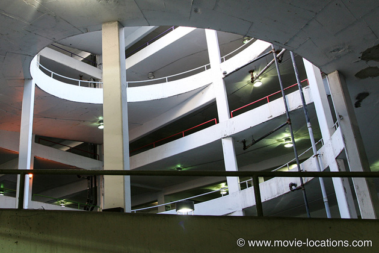
▶ He takes a short cut, into the Randolph and Wells Parking Garage, North Wells Street between Randolph and Lake Streets in the northwest section of the Loop, swirling up the circular ramp for the spectacular rooftop chase (largely filmed in the studio using miniatures). ⏏
▶ The chase continues along Lower Wacker Drive, the lower level of the double-decker highway bordering the Chicago River, running along the northwest border of the Loop ⏏
▶ It leads onto the ‘Gotham freeway’ – which is the Amstutz Expressway, a two-mile stretch of highway in downtown Waukegan, north of the city. The highway’s intended link to Chicago was never built, which makes the near-forgotten stretch of road ideal for filming. ⏏
Visit Info
Visit The Film Locations
Illinois | Chicago
Visit: Chicago
Flights: O’Hare International Airport, 10000 West O'Hare Ave, Chicago, IL 60666 (tel: 800.832.6352)
Travel around: Chicago Transit Authority
UK | London
Flights: Heathrow Airport; Gatwick Airport
Visit: London
Travelling: Transport For London
Stay at: the St Pancras London Hotel, Euston Road, NW1 2AR (tel: 020.7841.3540)
See a show at: the Garrick Theatre, 2 Charing Cross Rd, London WC2H 0HH (tel: 0844.482.9673)
Dine at: Plateau, 4th Floor, Canada Square, London E14 5ER (tel: 020.7715.7100)
UK | Buckinghamshire
Visit: Buckinghamshire
UK | Bedfordshire
Visit: Bedfordshire
UK | Essex
Visit: Essex
Visit: Coalhouse Fort, Princess Margaret Road, Tilbury, Essex RM18 8PB (tel: 01375.844203)
Iceland
Visit: Iceland
Visit: Reykjavik
Flights: Keflavík International Airport, Southern Peninsula, 235, Iceland (tel: +354.425.6000)